List of recent publications:
Corresponding author:
12) Feudale, L. and A. Manzato, 2014:
Cloud–to–Ground Lightning Distribution and its Relationship with Orography and anthropogenic emissions in the Po Valley,
Journal of Applied Meteorology and Climatology, 53, 2651–2670.
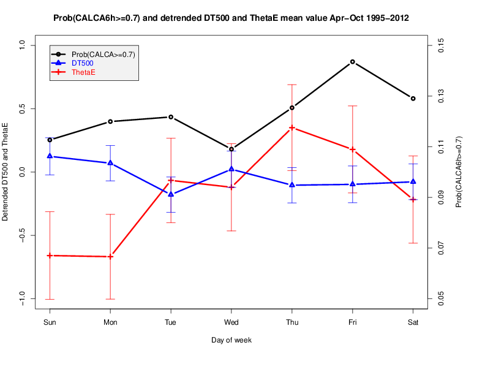
11) Manzato, A., Davolio, S., Miglietta, M. M., Pucillo, A., and M. Setvák, 2015:
12 September 2012:
A supercell outbreak in NE Italy?,
Atmos. Res.,
153, 98–118.
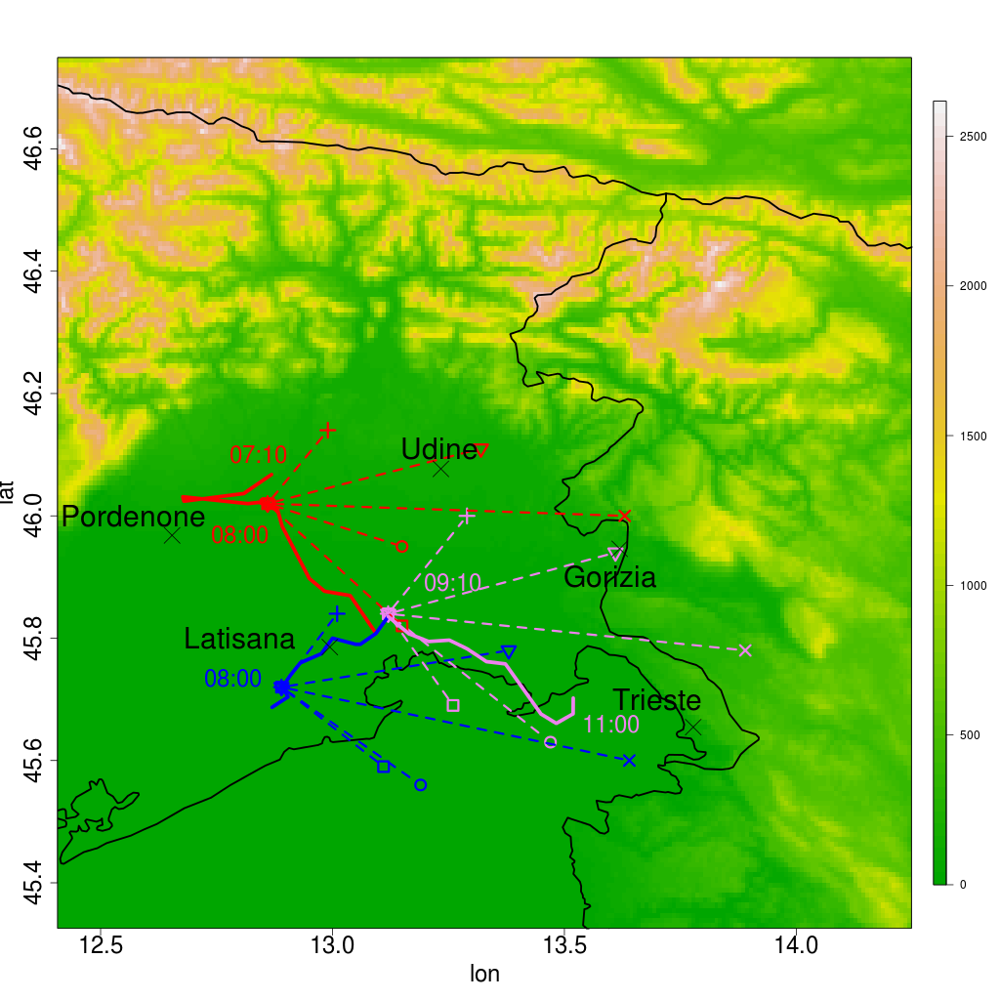
10) Manzato, A., 2013:
Hail
in NE Italy: A neural network ensemble forecast using
sounding–derived indices,
Weather and Forecasting,
28, 3–28.
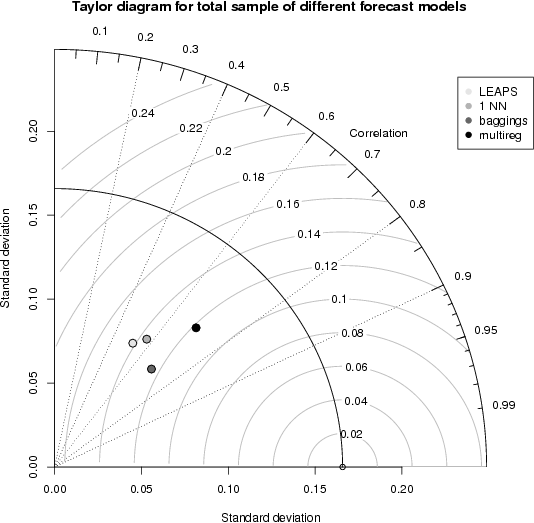
9) Manzato, A., 2012:
Hail
in NE Italy: Climatology and bivariate analysis with the
sounding--derived indices,
Journal of Applied Meteorology
and Climatology, 51, 449-467.
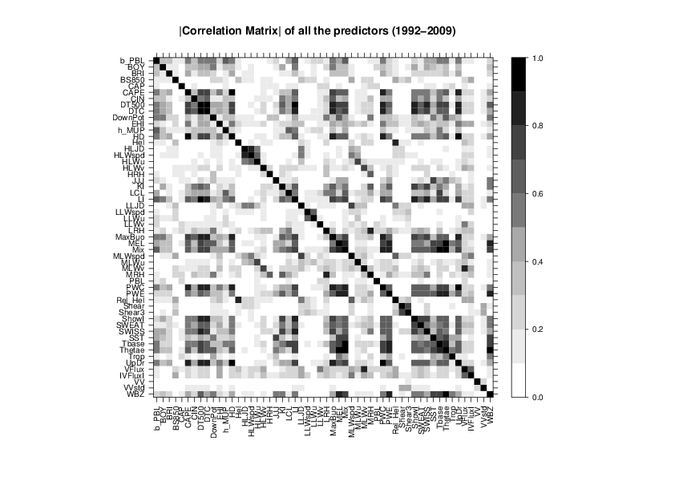
8) Manzato, A., 2008:
A
Verification of Numerical Model Forecasts for Sounding-Derived
Indices above Udine, NE Italy,
Weather and Forecasting,
23, n3, 477-495. (draft PDF version,
2MB!)
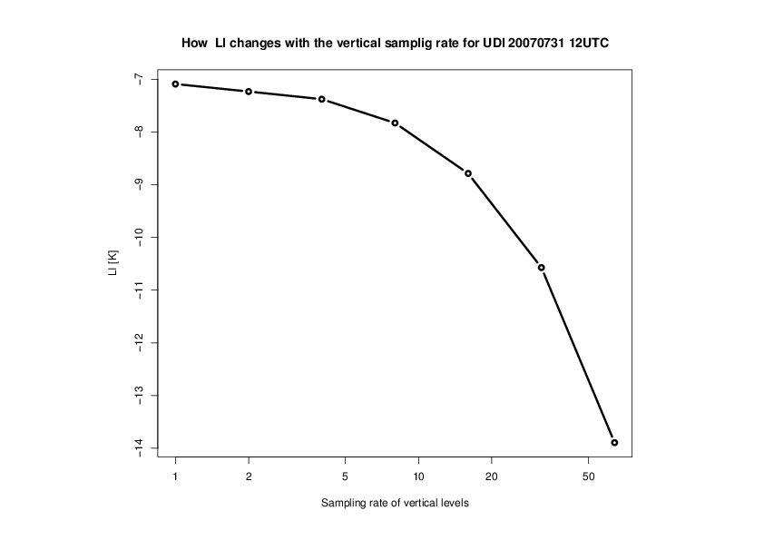
7) Manzato, A., 2007:
A
Note on the Maximum Peirce Skill Score,
Weather and
Forecasting, 22, n5, 1148-1154.
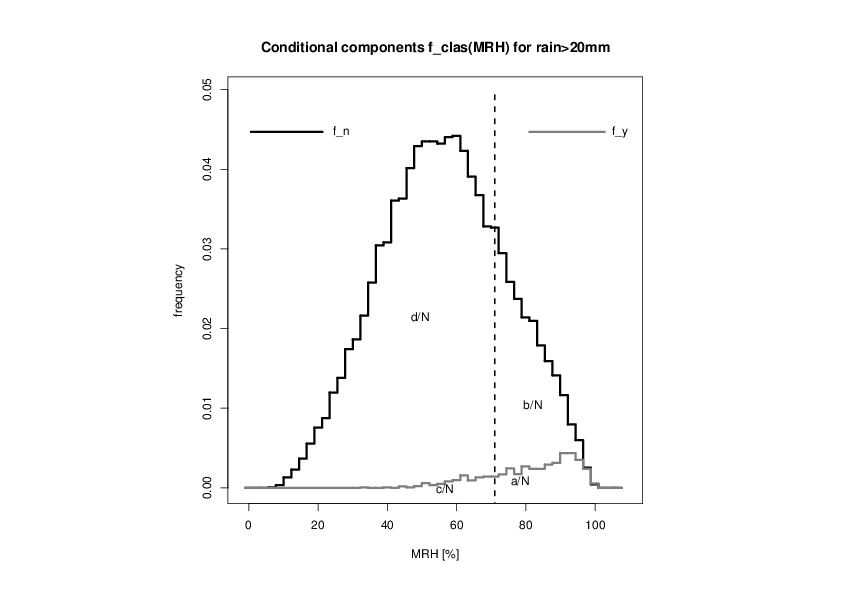
6) Manzato, A., 2007:
Sounding-Derived
Indices for Neural Network Based Short-Term Thunderstorm and Rainfall
Forecasts,
Atmos. Res. ECSS 2004 special issue, 83,
349-365. (draft PDF version)
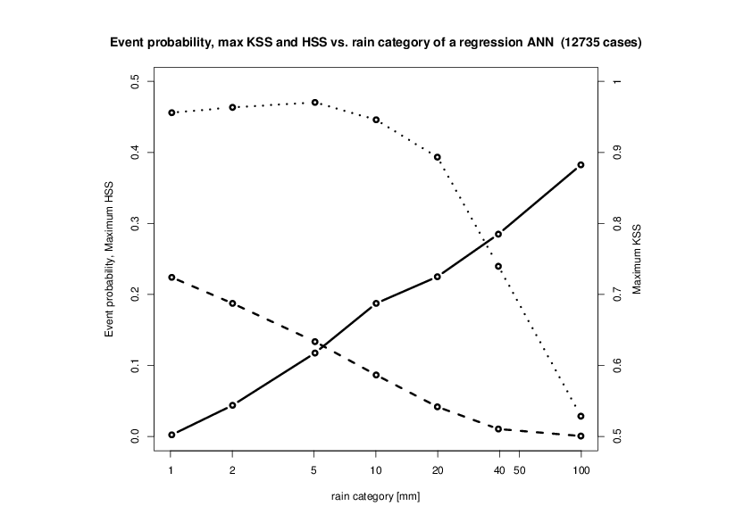
5) Manzato, A., 2007:
The
6 Hours Climatology of Thunderstorms and Rainfalls in the Friuli
Venezia Giulia Plain,
Atmos. Res. ECSS 2004 special
issue, 83, 336-348. (draft
PDF version)
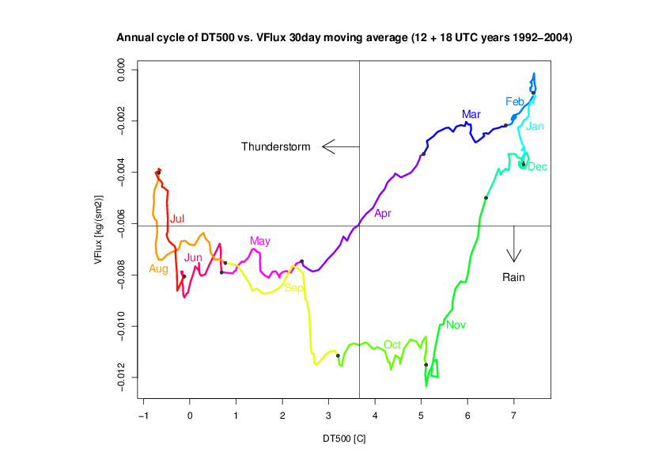
4) Manzato, A., 2005:
An
odds ratio parameterization for ROC diagram and skill score indices,
Weather and Forecasting, 20, n6, 918-930.
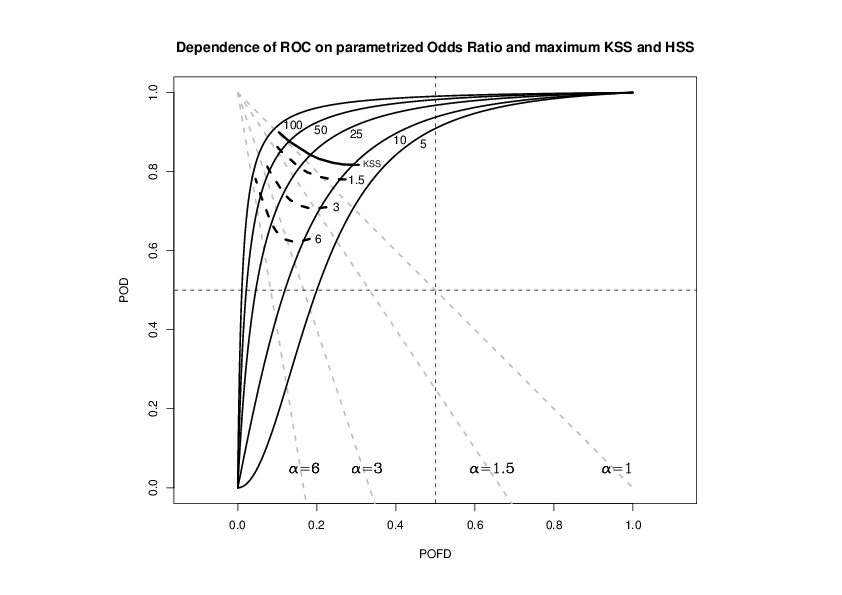
3) Manzato, A., 2005:
The
use of sounding derived indices for a neural network short-term
thunderstorm forecast,
Weather and Forecasting, 20,
n6, 896-917.
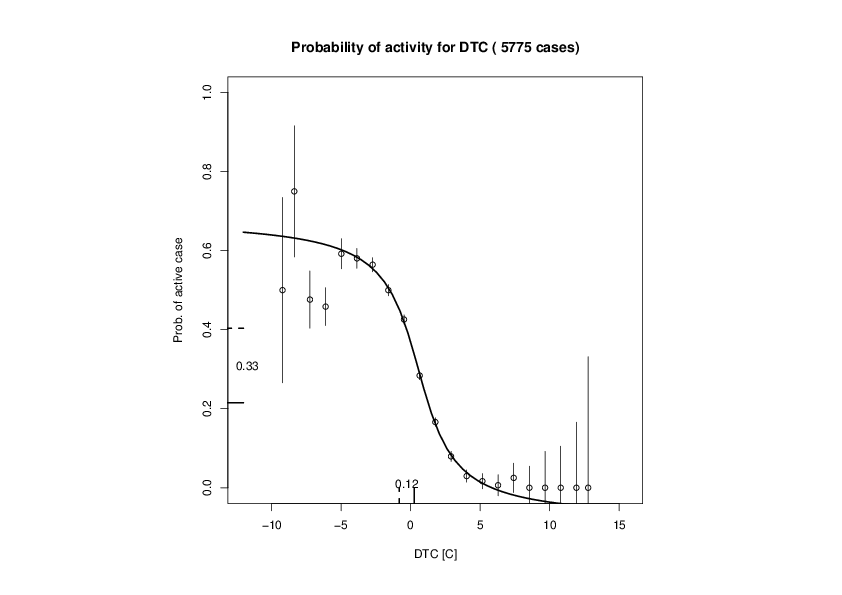
2) Manzato, A., 2003:
A
climatology of instability indices derived from Friuli Venezia Giulia
soundings, using three different methods,
Atmos. Res.,
67-68, 417-454.
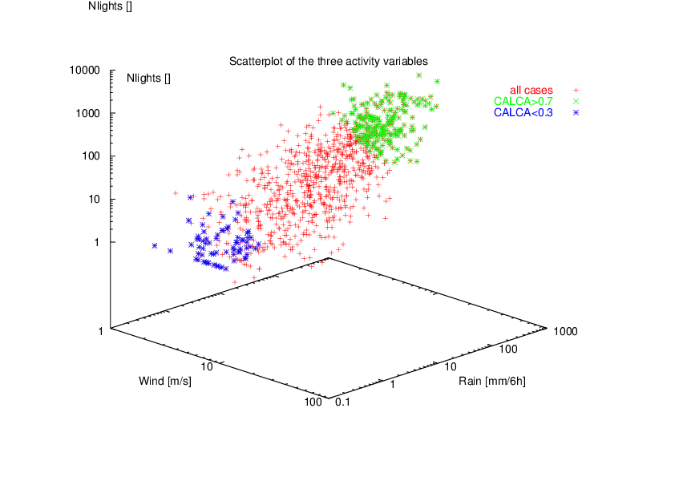
1) Manzato, A. and G. M. Morgan, 2003:
Evaluating
the sounding instability with the Lifted Parcel Theory,
Atmos. Res., 67-68, 455-473.
Warning: this paper
has the following ERRATA
CORRIGE
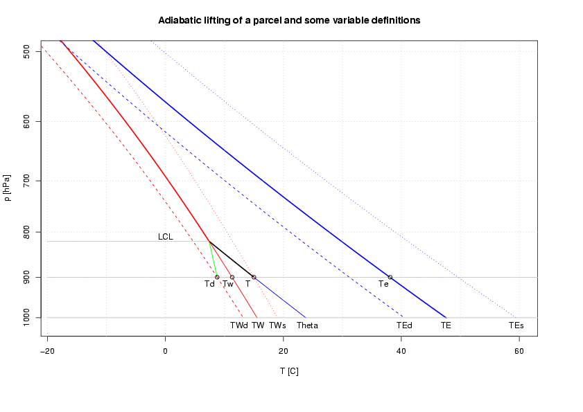
Not lead authored:
Davolio S., R. Ferretti, L. Baldini, M. Casaioli, D. Cimini, M. E. Ferrario, S. Gentile, N. Loglisci, I. Maiello, A. Manzato, S. Mariani, C. Marsigli, F. S. Marzano, M. M. Miglietta, A. Montani, G. Panegrossi, F. Pasi, E. Pichelli, A. Pucillo, A. Zinzi, 2015:
The role of the Italian scientific community in the first HyMeX SOP: an outstanding multidisciplinary experience,
Meteorologische Zeitschrift, 7 pp, DOI: 10.1127/metz/2014/0624.
Ferretti, R., Pichelli, E., Gentile, S., Maiello, I., Cimini, D., Davolio, S., Miglietta, M. M., Panegrossi, G., Baldini, L., Pasi, F., Marzano, F. S., Zinzi, A., Mariani, S., Casaioli, M., Bartolini, G., Loglisci, N., Montani, A., Marsigli, C., Manzato, A., Pucillo, A., Ferrario, M. E., Colaiuda, V., and Rotunno, R., 2014:
Overview of the first HyMeX Special Observation Period over Italy: observations and model results,
Hydrol. Earth Syst. Sci., 18, 1953-1977, doi:10.5194/hess-18-1953-2014.
Feudale, L., A. Manzato and S. Micheletti 2013:
A Cloud–to–Ground Lightning Climatology for North–Eastern Italy,
Advances in Science and Research, 10, 77-84.
A. Pucillo and A. Manzato, 2013:
Usefulness and skill of station-derived predictors in the forecasting storm
occurrence and intensity,
Atmos. Res., 123, 31-47.
Antonelli, P., Manzato, A., Puca, S. and F. Zauli, 2011:
Evaluating atmospheric instability from high spectral resolution
IR satellite observations,
Eumetsat Technical Report
PA/IIS/FR/2010/01, available at
http://www.eumetsat.int/website/home/Satellites/FutureSatellites/MeteosatThirdGeneration/MTGResources/index.html
M. Bertato, D. Giaiotti, A. Manzato and F. Stel, 2003:
An
interesting case of tornado in Friuli-Northeastern Italy,
Atmos.
Res. 67-68, 3-21.
R. Bechini, D. Giaiotti, A. Manzato, F. Stel and S. Micheletti,
2001:
The June 4 th 1999 severe weather episode in San
Quirino, Italy: a tornado event?,
Atmos. Res., 56, 213-232.
D. Giaiotti, A. Manzato, S. Micheletti, F. Stel, 2001:
The
katabatic flows in the Julian Alps as a local magnification factor in
thermal anomalies of Autumn-Winter 2000-2001.,
(poster
abstract) MAP Newsletter, 15, 214.
G. Morgan, F. Stel, A. Manzato, E. Gianesini, A. Farre, M.
Compassi, L. Fae, E. Dietrich, R. Fabbo, R. Bechini, and M. Bertato,
1998:
An update on the status of the Italo-Slovenian hail
prevention project.,
Proceedings of the Symposium RADME98,
Theoretical, Experimental and Operational Aspects of
Radarmeteorology, Tor Vergata, University, Rome, 9-10 June, 239-243.
Not reviewed:
A. Manzato, S. Micheletti and F. Pieri, 2013: Le nevicate sui
monti del Friuli Venezia Giullia: Evoluzione degli spessori in
funzione dell'altitudine , Meteorologica Anno XII n.2, Atti del
XIII conferenza annuale UMFVG, ISSN 1827-3858, pp. 39-41.
A.
Cicogna and A. Manzato, 2012: Stima dello stato del cielo mediante
uso di misure di radiazione solare, Italian Journal of
Agrometeorology, Atti del XV convegno AIAM, ISBN 978-88-555-3175-7,
pp. 101-102.
A. Manzato and P. Antonelli, 2011: Forecasting
thunderstorms on the Po Valley using sounding derived and satellite
(Eumetsat IASI) derived indicies with Neural Networks, ECSS
2011 poster.
P. Antonelli, A. Manzato, S. Puca, F. Zauli, R.
Garcia, R. Stuhlmann and R. Tjemkes, 2011: Evaluating
atmospheric instability from high spectral resolution IR satellite
observations, ECSS 2011 poster.
A. Manzato and A.
Cicogna, 2009: La grandine nel 2008, Notiziario ERSA 2 del
2009, pag. 64-70.
A. Manzato and A. Cicogna, 2008: La grandine
nel 2007, Notiziario ERSA 3 2008, pp. 82-86.
F. Stel and A.
Manzato, 2008: La grandine nel 2006, Notiziario ERSA 1 2008,
pp. 66-69.
A. Cicogna, Manzato A., Stefanuto L., Salvador M.,
Nordio S., Pucillo A., Stel F., Giaiotti D., Centore M., Bradassi D.,
Gani M., Micheletti S., 2007: METEO.FVG. Un nuovo strumento per la
diffusione delle informazioni meteoclimatiche, Italian Journal of
Agrometeorology, AIAM Abstracts, suppl. al n.1 2007, pp. 16-17.
A.
Manzato and F. Stel, 2007: La grandine nel 2005, Notiziario
ERSA 3-4 2006, pp. 70-72.
A. Manzato and F. Stel, 2005: La
grandine nel 2004, Notiziario ERSA giugno-agosto 2005, pp. 41-43.
F. Stel and A. Manzato, 2004: La grandine nel 2003,
Notiziario ERSA maggio-settembre 2004, pp. 55-56.
A. Manzato and
F. Stel, 2003: La grandine nel 2002, Notiziario ERSA
febbraio-marzo 2003, pp. 54-56.
F. Stel and A. Manzato, 2002: La
grandine nel 2001, Notiziario ERSA gennaio-aprile 2002, pp.
63-64.
A. Manzato and F. Stel, 2001: La grandine nel 2000,
Notiziario ERSA luglio 2001, pp. 47-48.
F. Stel and A. Manzato,
2000: La grandine nel 1999, Notiziario ERSA gennaio 2000, pp.
74-76.
F. Stel and A. Manzato, 1999: La grandine nel 1998,
Notiziario ERSA gennaio 1999, pp. 50-51.
F. Stel and A. Manzato,
1998: Come si formano i temporali 2, Notiziario ERSA dicembre
1998, p. 60.
F. Stel and A. Manzato, 1998: Come si formano i
temporali 1, Notiziario ERSA ottobre 1998, pp. 57-58.
F. Stel
and A. Manzato, 1998: La grandine del 1997, Notiziario ERSA
febbraio 1998, pp. 45-48.
A. Manzato and F. Stel, 1997: La
grandinata del 5 luglio 1997, Notiziario ERSA ottobre 1997, pp.
43-44.
University lectures:
A. Manzato 2003: Considerazioni sul profilo verticale dell'atmosfera, part I (0.3 MB)
A. Manzato 2003: Considerazioni sul profilo verticale dell'atmosfera, part II (0.6 MB)
A. Manzato 2003: Considerazioni sul profilo verticale dell'atmosfera, part III (0.5 MB)
A. Manzato 2003: Considerazioni sul profilo verticale dell'atmosfera, part IV (0.7 MB)
dispense delle lezioni tenute al corso di Fisica Computazionale
dell'Università di Udine, 57 pp.
Tino © August 2012